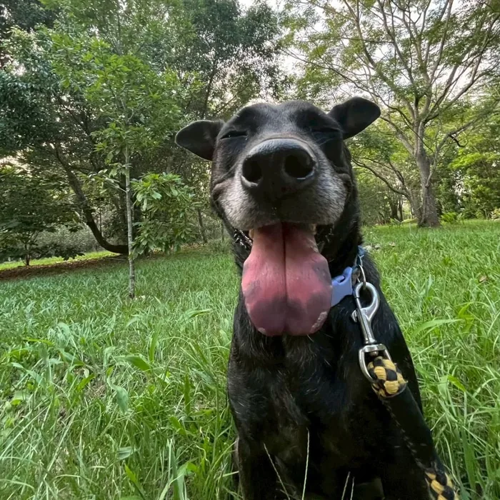

食品類
- 狗罐頭
- 零食、肉乾
- 各式副食、鮮食
請確認未開封，保存期限還有三個月以上。乾飼料目前已有協會長期贊助。
我們是國立暨南國際大學動物保護社（暨大動保社），照顧校園犬舍裡的狗狗，也盡力協助校園內遇到的每一種動物。這裡有 13 位等待被認識的孩子，歡迎大家看看牠們的故事。

歡迎來現場找我們，也歡迎帶朋友一起來認識狗狗。
我們排班照顧犬舍的狗狗、安排就醫與長期用藥，在校園裡遇到需要幫忙的動物時協助安置與轉介，也在校內外舉辦教育宣導、送養與義賣活動。這些是我們一路走來的活動紀錄。
從犬舍的日常照顧、醫療，到校園動物協助與活動推廣，以下是我們平常在做的事。
每天排班清潔環境、更換飼料與飲水，讓狗狗有穩定乾淨的生活。
安排生病的狗狗就醫並執行後續療程，也為老犬與行動不便的狗狗準備關節藥。
在校園發現需要幫助的動物，協助安置並聯繫合適的單位接手。
舉辦教育宣導、洗狗大會與送養會，也參與校內擺攤與義賣活動。
目前共有 13 位等待認養的孩子，這裡先介紹其中 4 位。
捐款主要用於狗狗的醫療費用、日常用品，以及寒暑假的排班補貼。
商品由社團夥伴親手設計，義賣所得將全數投入狗狗的照護與醫療。
我們整理了大家最常問的問題。
本社宗旨為「以服務和愛的教育為目的」——在保障師生安全、維護校園環境衛生的同時，尊重動物生命、保護動物，並在校園中持續宣導尊重生命的觀念。
創社之前，校園流浪犬事務以捕捉為主要手段，受限於人力與週期，成效有限。創社成員相信，妥善的照護、醫療與絕育，才是更根本的解法。從創社至今，管理方式隨著制度不斷調整，但這個信念沒有改變。
本社協助管理的犬隻依校方《犬貓管理要點》照護：辦理寵物登記、定期完成疫苗注射與絕育，並在固定的區域裡生活，不會讓牠們四處遊蕩。
比起單向的救助，我們更重視觀念的改變。透過講座、宣導、教育推廣與志工培訓，推廣飼主責任、絕育觀念與動物福利。
動物保護與生態保育不是對立的兩件事。我們既關心校園犬隻的福利，也參與臺灣原生野生動物的保育與通報工作。
看診、手術與後續用藥，以及老犬和行動不便狗狗的關節保養。這是我們支出最大的一塊。
犬舍清潔用品、外用藥品、牽繩、食盆等維持狗狗日常生活所需的各項物資。
長假期間多數同學返鄉，我們補貼留下來排班的夥伴，讓狗狗的照顧不因學期結束而中斷。
校外送養會、校內宣導擺攤與保育推廣，讓更多人認識校園動物的處境。
以下是我們目前最需要的物資。不確定手邊的東西適不適合，直接用 LINE 問我們也可以。
請確認未開封，保存期限還有三個月以上。乾飼料目前已有協會長期贊助。
犬舍每天都要清理，這類消耗品用得最快。
舊毛巾與舊被單只要洗淨、沒有破損都很好用。
透過官方 LINE 告訴我們您想捐贈的物資種類與數量。
社團夥伴會確認目前的缺口與保存空間，並與您約定時間。
可以與我們約時間當面交付，也可以宅配寄送；碰面的時間與地點會在 LINE 上告知。我們收到後會回報狀況。